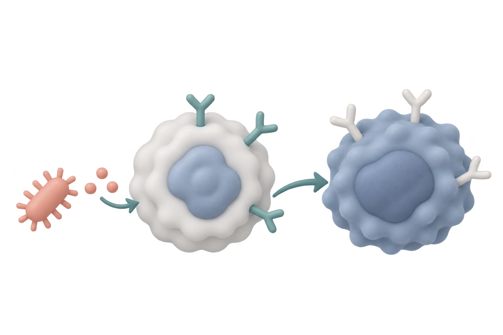
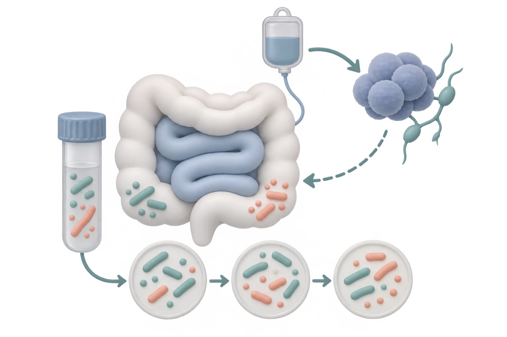
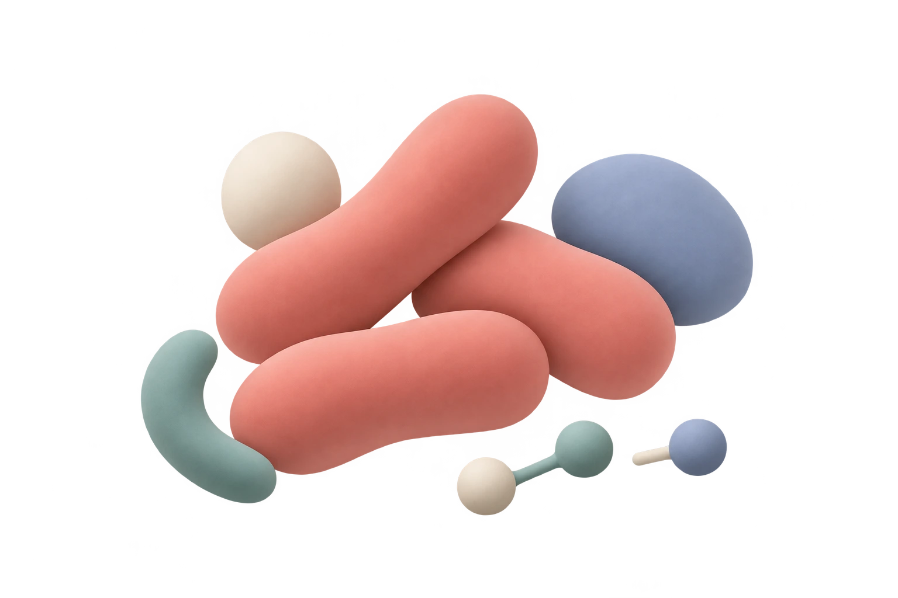

Lymphoma
림프종
림프종 환자의 장내미생물과 대사산물을 분석해 치료 효과와 독성, 전신증상과의 관계를 밝히고 관해 이후의 미생물 회복을 추적합니다.

Diffuse large B-cell lymphoma (DLBCL)
R-CHOP 치료 반응과 부작용
미만성 거대 B세포 림프종(DLBCL)의 1차 치료에 사용하는 대표적인 면역화학항암요법은 R-CHOP입니다. 약 60%의 환자는 치료 후 장기 관해를 유지하지만, 환자마다 치료 반응이 달라지는 이유는 명확히 밝혀지지 않았습니다.
장내미생물이 면역계에 미치는 영향을 고려할 때, 이들이 DLBCL 항암치료 반응에도 영향을 줄 가능성이 높다고 생각했습니다. 이에 장내미생물과 항암치료 반응의 연관성을 연구하였습니다.
DLBCL 환자는 치료 전부터 건강한 사람보다 장내미생물의 다양성이 낮고, 잠재적 병원성 세균군인 장내세균과(Enterobacteriaceae)가 증가하는 양상의 장내미생물 불균형(dysbiosis)이 나타납니다. 이러한 dysbiosis가 심한 환자에서 항암치료 후 발열성 호중구감소증 부작용과 암의 재발 또는 진행 위험이 높다는 사실을 발견했습니다.
이 연구는 장내미생물을 림프종 환자의 항암치료 예후에 대한 중요한 예측 마커이자 동반 치료 표적으로 제시했습니다.

DLBCL CAR-T Therapy
미생물 대사산물과 세포치료의 효과 및 독성
1차 치료 후 재발하거나 기존 치료에 반응하지 않는 DLBCL에서는 CAR-T 세포치료를 적용합니다. 우리는 R-CHOP을 통한 1차 치료뿐 아니라 CAR-T 치료에서도 장내미생물과 치료 반응 사이에 중요한 연관성이 있을 것으로 예상하고, 재발 또는 불응성 DLBCL 환자의 장내미생물 군집과 CAR-T 치료 반응을 조사하였습니다.
분석 결과, 장내에 Bacteroides fragilis와 이노신(inosine) 합성 기능이 풍부한 환자에서 CAR-T 치료 예후가 좋다는 사실을 발견했습니다. 또한 유전체에서 발견한 합성 기능을 실제 대사산물과 연결하기 위해 혈중 대사체 분석을 수행했습니다. 치료 경과가 좋은 환자에서 혈중 inosine 농도가 높았고, B. fragilis의 양과 혈중 inosine 농도 사이의 연관성을 확인했습니다.
In vitro killing assay에서는 inosine이 CAR-T 세포의 암세포 제거 능력을 높였습니다. A2A 수용체를 억제하면 이 효과가 감소해, inosine의 작용에 A2A 신호가 관여한다는 것을 확인했습니다. CAR-T 치료의 독성 측면에서는 acetate와 butyrate를 만드는 미생물 기능이 풍부하고 혈중 농도가 높은 환자에서 부작용이 적었습니다.
Ongoing study
현재는 inosine이 CAR-T 세포의 작용에 미치는 영향과 그 기전에 대한 후속 연구를 수행하고 있습니다.

Long-term Remission DLBCL
DLBCL 항암치료 장기관해군 추적 연구
DLBCL 환자의 약 60%는 1차 항암치료 후 장기 관해를 유지합니다. 선행연구(Yoon & Kang et al., 2023)에서는 DLBCL 환자의 장내미생물 불균형이 항암치료 예후와 연관된다는 사실을 밝혔습니다. 이 선행연구를 바탕으로, 항암치료 후 관해가 지속되면 장내미생물의 불균형과 기능도 회복되는지를 연구했습니다.
이를 확인하기 위해 R-CHOP 1차 치료 후 3년 이상 완전관해를 유지한 환자 62명에서 진단 당시와 장기 추적 시점의 검체를 비교해, 같은 환자에게서 일어난 변화를 추적 관찰하였습니다.
분석 결과, 3년 이상 지난 장기관해 시점에는 미생물의 다양성이 치료 전보다 증가하고 dysbiosis가 감소했습니다. 진단 당시 풍부했던 잠재적 병원성 세균군인 Enterobacteriaceae는 줄고, 장내 환경을 보호하는 단쇄지방산(SCFA)을 만드는 공생균과 그 합성 기능을 가진 유전자가 증가했습니다.
장내미생물 회복의 정도에는 개인차가 있었는데, 이는 환자의 평소 식단과 연관이 높은 것으로 나타났습니다. 식이섬유가 풍부하고 전반적인 섭취량이 높은 식사 패턴을 가진 환자에서 장내미생물 회복의 폭이 컸습니다. 암이 재발하지 않고 관해가 유지된 환자에서도 남아 있는 dysbiosis는 불면과 설사 등의 불편한 증상과 관련되어 있었습니다.
In reviewJournal of Translational Medicine

Follicular lymphoma (FL)
소포림프종의 Dysbiosis와 B-symptom
소포림프종은 비교적 천천히 진행하는(indolent) 암종이지만, 암에 의한 B-symptom(발열, 심한 야간 발한, 체중 감소)이 나타날 수 있습니다. B-symptom의 발생은 종양의 임상적 위험도만으로 명확히 설명되지 않으며, 이를 예측할 바이오마커도 뚜렷하게 확립되지 않았습니다.
장내미생물과 B-symptom의 연관성을 조사한 결과, B-symptom이 나타나는 소포림프종 환자의 장내에는 장을 보호하는 물질인 butyrate를 만드는 공생균이 줄고, 잠재적으로 염증을 일으킬 수 있는 Enterobacteriaceae가 증가한 상태가 함께 나타났습니다. 미생물 기능 분석에서도 B-symptom이 있는 환자에서는 공생균의 발효 기능이 낮고, Enterobacteriaceae의 내독소(LPS) 생성 및 철 획득 관련 기능이 높은 양상이 관찰됐습니다.
장내미생물과 숙주의 면역 지표 사이의 상관관계를 분석한 결과, 장내미생물 불균형이 나타난 환자에서는 장상피 손상 지표인 I-FABP, 세균 내독소(LPS)에 대한 반응과 관련된 LBP, 면역 활성화 지표인 sCD14와 sTNFR2가 높게 나타났습니다. 이를 통해 장내미생물 불균형이 B-symptom이 있는 환자의 장상피 손상 및 면역 활성화와 연결되어 있음을 밝혔습니다.
Ongoing study